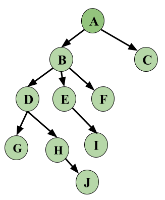

Graph Based Protocols are yet another way of implementing Lock Based Protocols.
As we know the prime problems with Lock Based Protocol has been avoiding Deadlocks and ensuring a Strict Schedule. We’ve seen that Strict Schedules are possible with following Strict or Rigorous 2-PL. We’ve even seen that Deadlocks can be avoided if we follow Conservative 2-PL but the problem with this protocol is it cannot be used practically. Graph Based Protocols are used as an alternative to 2-PL. Tree Based Protocols is a simple implementation of Graph Based Protocol.
A prerequisite of this protocol is that we know the order to access a Database Item. For this we implement a Partial Ordering on a set of the Database Items (D) {d1, d2, d3, ….., dn} . The protocol following the implementation of Partial Ordering is stated as-
- If di –> dj then any transaction accessing both di and dj must access di before accessing dj.
- Implies that the set D may now be viewed as a directed acyclic graph (DAG), called a database graph.
Tree Based Protocol –
- Partial Order on Database items determines a tree like structure.
- Only Exclusive Locks are allowed.
- The first lock by Ti may be on any data item. Subsequently, a data Q can be locked by Ti only if the parent of Q is currently locked by Ti.
- Data items can be unlocked at any time.
Following the Tree based Protocol ensures Conflict Serializablity and Deadlock Free schedule. We need not wait for unlocking a Data item as we did in 2-PL protocol, thus increasing the concurrency.
Now, let us see an Example, following is a Database Graph which will be used as a reference for locking the items subsequently.

Let’s look at an example based on the above Database Graph. We have three Transactions in this schedule and this is a skeleton example, i.e, we will only see how Locking and Unlocking works, let’s keep this simple and not make this complex by adding operations on data.
| T1 | T2 | T3 | |
|---|---|---|---|
| 1 | Lock-X(A) | ||
| 2 | Lock-X(D) | ||
| 3 | Lock-X(H) | ||
| 4 | Unlock-X(D) | ||
| 5 | Lock-X(E) | ||
| 6 | Lock-X(D) | ||
| 7 | Unlock-X(B) | ||
| 8 | Unlock-X(E) | ||
| 9 | Lock-X(B) | ||
| 10 | Lock-X(E) | ||
| 11 | Unlock-X(H) | ||
| 12 | Lock-X(B) | ||
| 13 | Lock-X(G) | ||
| 14 | Unlock-X(D) | ||
| 15 | Unlock-X(E) | ||
| 16 | Unlock-X(B) | ||
| 17 | Unlock-X(G) |
From the above example, first see that the schedule is Conflict Serializable. Serializablity for Locks can be written as T2 –> T1 –> T3.
Data items Locked and Unlocked are following the same rule as given above and follows the Database Graph.
Thus, let’s revise once more what are the key points of Graph Based Protocols.
Advantage –
- Ensures Conflict Serializable Schedule.
- Ensures Deadlock Free Schedule
- Unlocking can be done anytime
With some advantages comes some Disadvantages also.
Disadvantage –
- Unnecessary locking overheads may happen sometimes, like if we want both D and E, then at least we have to lock B to follow the protocol.
- Cascading Rollbacks is still a problem. We don’t follow a rule of when Unlock operation may occur so this problem persists for this protocol.
Overall this protocol is mostly known and used for its unique way of implementing Deadlock Freedom.
References: Database System Concepts, Fifth Edition [Silberschatz, Korth, Sudarshan], Chapter-16.